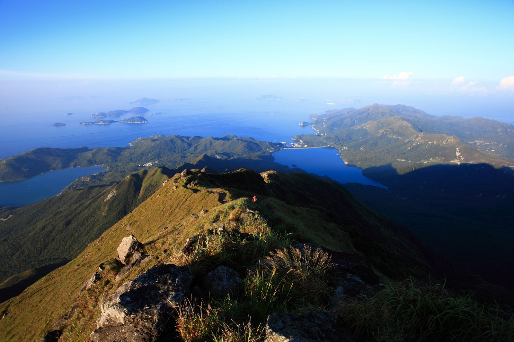
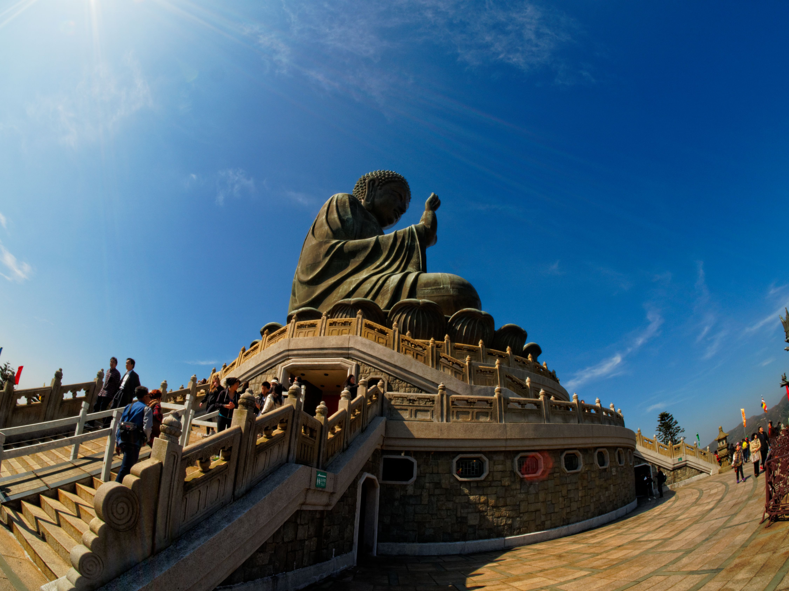
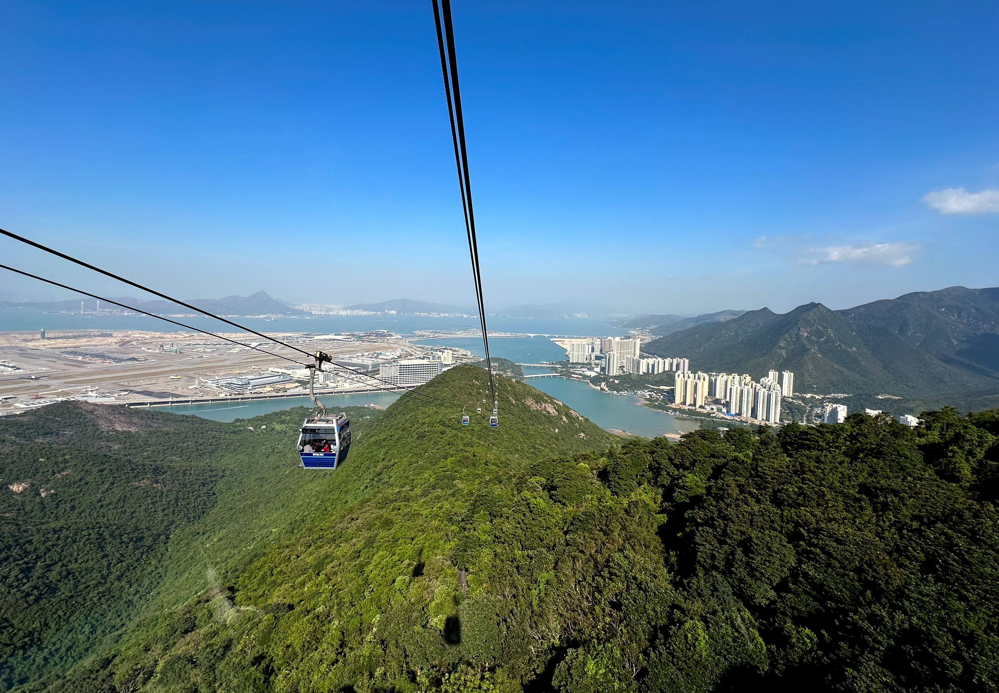
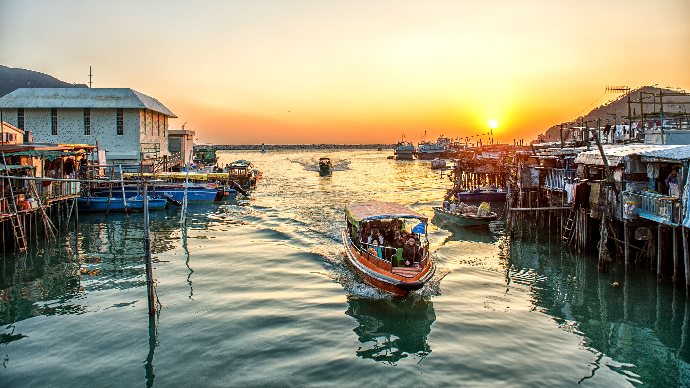
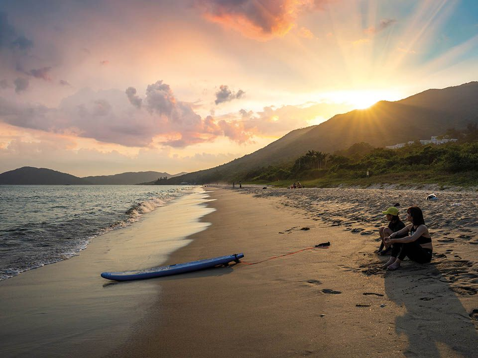

A Day Trip to Lantau Island
Lantau Island is Hong Kong's largest island, offering a mix of natural beauty, cultural landmarks, and modern attractions. Here's how to make the most of your day trip to Lantau Island.
Lantau Peak
Lantau Peak is the second highest peak in Hong Kong and offers stunning sunrise views. It's a challenging hike, but the panoramic vistas are well worth the effort.
Tip: Start your hike before dawn to catch the sunrise at the summit.
Tian Tan Buddha
The Tian Tan Buddha, also known as the Big Buddha, is one of the most iconic landmarks on Lantau Island. The statue is an impressive sight, and the surrounding area offers beautiful views and peaceful surroundings.
Tip: Visit the nearby Po Lin Monastery for a deeper cultural experience.
Ngong Ping 360
Ngong Ping 360 is a scenic cable car ride that offers spectacular views of Lantau Island and the South China Sea. It's a great way to get an aerial perspective of the island's natural beauty.
Tip: Opt for the crystal cabin for a unique glass-bottomed experience.
Tai O Fishing Village
Tai O is a charming fishing village known for its stilt houses and seafood markets. It's a great place to explore traditional Hong Kong culture and enjoy fresh seafood.
Tip: Take a boat tour to see the iconic stilt houses up close.
Cheung Sha Beach
Cheung Sha Beach is one of Hong Kong's longest beaches, offering a relaxing escape with beautiful sandy shores and clear waters. It's a perfect spot to unwind after a day of exploring.
Tip: Visit one of the beachside restaurants for a meal with a view.